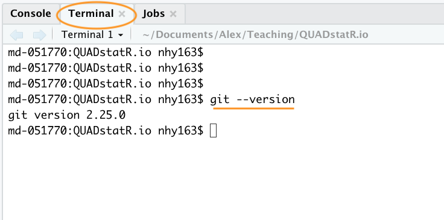

8.4 Getting started
This Chapter assumes that you have already installed the latest versions of R and RStudio. If you haven’t done this yet you can find instructions here.
8.4.1 Install Git
To get started, you first need to install Git. If you’re lucky you may already have Git installed (especially if you have a Mac or Linux computer). You can check if you already have Git installed by clicking on the Terminal tab in the Console window in RStudio and typing git --version (the space after the git command is important). If you see something that looks like git version 2.25.0 (the version number may be different on your computer) then you already have Git installed (happy days). If you get an error (something like git: command not found) this means you don’t have Git installed (yet!).

You can also do this check outside RStudio by opening up a separate Terminal if you want. On Windows go to the ‘Start menu’ and in the search bar (or run box) type cmd and press enter. On a Mac go to ‘Applications’ in Finder, click on the ‘Utilities’ folder and then on the ‘Terminal’ program. On a Linux machine simply open the Terminal (Ctrl+Alt+T often does it).
To install Git on a Windows computer we recommend you download and install Git for Windows (also known as ‘Git Bash’). You can find the download file and installation instructions here.
For those of you using a Mac computer we recommend you download Git from here and install in the usual way (double click on the installer package once downloaded). If you’ve previously installed Xcode on your Mac and want to use a more up to date version of Git then you will need to follow a few more steps documented [here][git-xcode]. If you’ve never heard of Xcode then don’t worry about it!
For those of you lucky enough to be working on a Linux machine you can simply use your OS package manager to install Git from the official repository. For Ubuntu Linux (or variants of) open your Terminal and type
sudo apt update
sudo apt install gitYou will need administrative privileges to do this. For other versions of Linux see here for further installation instructions.
Whatever version of Git you’re installing, once the installation has finished verify that the installation process has been successful by running the command git --version in the Terminal tab in RStudio (as described above). On some installations of Git (yes I’m looking at you MS Windows) this may still produce an error as you will also need to setup RStudio so it can find the Git executable (described below).
8.4.2 Configure Git
After installing Git, you need to configure it so you can use it. Click on the Terminal tab in the Console window again and type the following:
git config --global user.email 'you@youremail.com'
git config --global user.name 'Your Name'substituting 'Your Name' for your actual name and 'you@youremail.com' with your email address. We recommend you use your University email address as you will also use this address when you register for your GitHub account (coming up in a bit).
If this was successful, you should see no error messages from these commands. To verify that you have successfully configured Git type the following into the Terminal
git config --global --listYou should see both your user.name and user.email configured.
8.4.3 Configure RStudio
As you can see above, Git can be used from the command line, but it also integrates well with RStudio, providing a friendly graphical user interface. If you want to use RStudio’s Git integration (we recommend you do - at least at the start), you need to check that the path to the Git executable is specified correctly. In RStudio, go to the menu Tools -> Global Options -> Git/SVN and make sure that ‘Enable version control interface for RStudio projects’ is ticked and that the ‘Git executable:’ path is correct for your installation. If it’s not correct hit the Browse... button and navigate to where you installed git and click on the executable file. You will need to restart RStudio after doing this.

8.4.4 Register a GitHub account
If all you want to do is to keep track of files and file versions on your local computer then Git is sufficient. If however, you would like to make an off-site copy of your project or make it available to your collaborators then you will need a web-based hosting service for your Git repositories. This is where GitHub comes into play (there are also other services like GitLab, Bitbucket and Savannah). You can sign up for a free account on GitHub here. You will need to specify a username, an email address and a strong password. We suggest that you use your University email address (if you have one) as this will also allow you to apply for a free educator or researcher account later on which gives you some useful benefits (don’t worry about this now though). When it comes to choosing a username we suggest you give this some thought. Choose a short(ish) rather than a long username, use all lowercase and hyphenate if you want to include multiple words, find a way of incorporating your actual name and lastly, choose a username that you will feel comfortable revealing to your future employer!
Next click on the ‘Select a plan’ (you may have to solve a simple puzzle first to verify you’re human) and choose the ‘Free Plan’ option. Github will send an email to the email address you supplied for you to verify.
Once you’ve completed all those steps you should have both Git and GitHub setup up ready for you to use (Finally!).